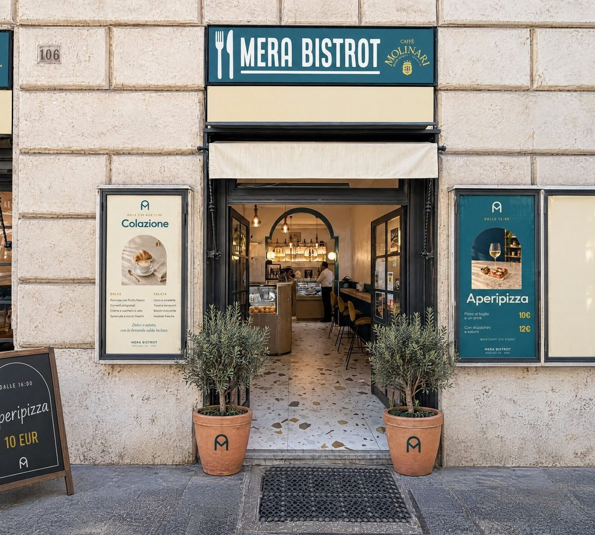
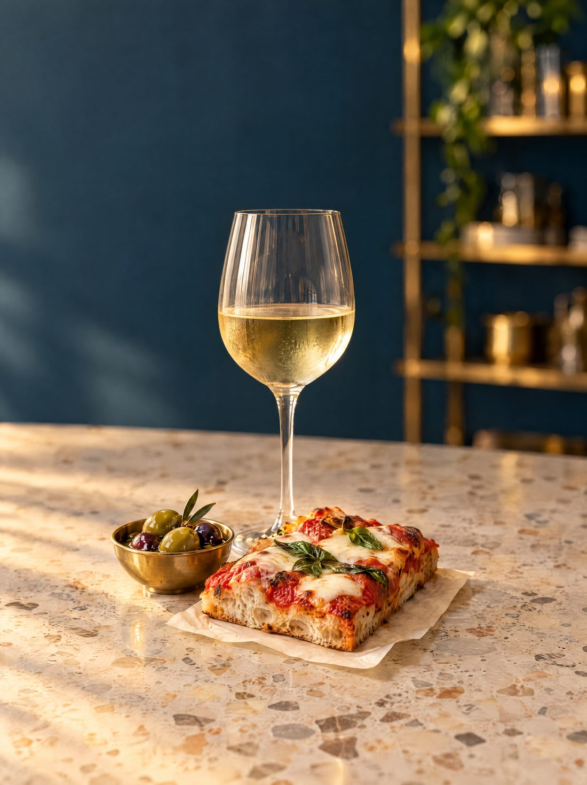
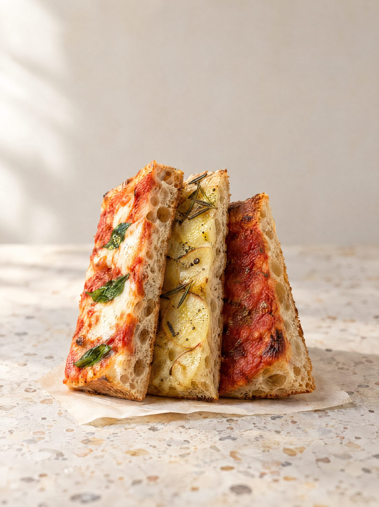

Un bistrot che cambia cinque volte al giorno, a duecento metri da Santa Maria Maggiore. Pizza al taglio accanto, al 108.
Aperto tutti i giorni 7:30 — 22:00 · Colazione fino alle 16:00 · Aperitivo da 10€

Caffè alle 8, tonnarelli all'una, trancio alle 4, spritz alle 6.
Non è un posto che fa tante cose. È un posto che, a ogni ora, ne fa bene una sola.
Pancake, uova e bacon, club sandwich. Anche nel pomeriggio.
Tonnarelli e polpette, oppure un trancio al volo al 108.
Crema di caffè, centrifughe e pizza appena sfornata.
Quattro formule da 10€, bevanda inclusa. Il momento per cui si torna.
Pizze tonde, rosse e bianche, fino a chiusura.
Ogni formula comprende la bevanda: cocktail, spritz, vino, birra o analcolica. Niente buffet tristi, niente patatine in ciotola.


Due porte più in là. Teglia romana, cotta e tagliata sul momento, qui o da portare via.
Pizze tonde da asporto su ordinazione — 06 86299500
Google · [numero] recensioni — dato da inserire
da Santa Maria Maggiore, sulla direttrice per il Colosseo
tutti i giorni, dalle 7:30 alle 22:00
Scrivici su WhatsApp: rispondiamo in pochi minuti.